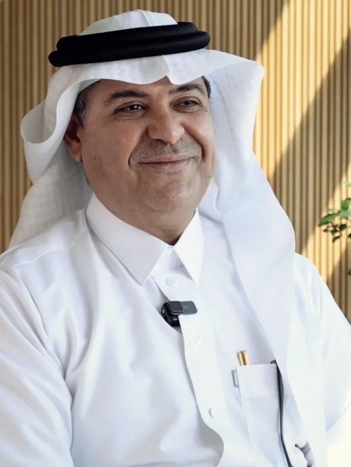

مِدراك
السياسة معقدة؟ إحنا نرتبها لك.
مِدراك دليلك في تخصص العلوم السياسية — يشرح لك التخصص قبل لا تدخله، ويرتب لك الخطة والمقررات وأنت داخله، بأسلوب قريب منك وما يعقّد عليك.
ماذا تعني السياسة؟ 🤔
داخل التخصص ومحتار وش تتوقع؟ ولا يهمك. التخصص ما هو بس "أخبار وتحليل سياسي" — هو مجال علمي يدرس كيف تُدار الدول، كيف تُصنع القرارات، وكيف تتفاعل الدول مع بعضها. تكتسب فيه مهارات تحليل، بحث، وكتابة أكاديمية تفتح لك أبواب كثيرة بعد التخرج.
العلاقات الدولية
كيف تتفاعل الدول والمنظمات مع بعضها في القضايا الدولية.
الفكر السياسي
تطور الأفكار والنظريات السياسية عبر التاريخ لفهم الحاضر.
النظم السياسية المقارنة
مقارنة أنظمة الحكم المختلفة حول العالم وخصائص كل نظام.
السياسة العامة والتنمية
كيف تُصنع القرارات الحكومية وتُقيَّم أثرها على المجتمع.
الاقتصاد السياسي العالمي
العلاقة بين الاقتصاد والسياسة على المستوى الدولي.
المنظمات والدبلوماسية الدولية
دور المنظمات الدولية وفن التفاوض بين الدول.
قسم العلوم السياسية بجامعة الملك عبدالعزيز 🎓
أهم جزء بالموقع. كل معلومة هنا مبنية على مصادر رسمية من الجامعة، مع رابط المصدر بجانبها.
تأسس قسم العلوم السياسية في جامعة الملك عبدالعزيز عام 1403هـ، استجابةً لاحتياجات التنمية والتعليم العالي في المملكة، واستكمالًا لمنظومة أقسام كلية الاقتصاد والإدارة. بدأت دفعات الخريجين بالتوالي من عام 1405هـ. تم إتاحة التخصص للطالبات ابتداءً من عام 1445هـ.
يمنح القسم درجة بكالوريوس العلوم السياسية، بإجمالي 128 وحدة دراسية موزعة على أربع سنوات دراسية.
المصدر الرسمي ↗📍 كلية الاقتصاد والإدارة – مبنى رقم (121) – الدور الخامس – مكتب رقم 523
📞 6952000 (12) 00966 — تحويلة 52129
✉️ ps.fea@kau.edu.sa
👩🎓 شطر الطالبات — مكتب رقم G18 — تحويلة 41833
المصدر الرسمي ↗الخطة الدراسية 🗺️
اختر مجال تركيزك عشان تشوف كيف تتوزع موادك بالسنتين الثالثة والرابعة. اضغط على أي مادة عشان تشوف تفاصيلها.
* السنتان الأولى والثانية (بعد السنة التحضيرية) متطابقتان في المسارين. الفروقات تبدأ من الفصل السابع. المصدر الرسمي ↗
قاموس مِدراك السياسي 📖
أكثر من 400 مصطلح سياسي بالإنجليزي مع ترجمته العربية. إعداد: د. صادق مالكي — أستاذ العلوم السياسية بالجامعة.
🎧 استمع لنطق المصطلحات
تسجيل صوتي واحد يغطي المصطلحات، إعداد د. صادق مالكي.
نفتخر فيهم 🇸🇦
شخصية سياسية سعودية بارزة نتعرف عليها كل يوم — تختلف القائمة حسب اختيارك طلاب/طالبات بالأعلى.
النبذ مبنية على مصادر إخبارية ورسمية عامة، والقول المأثور (إن وُجد) منقول حرفيًا من تصريح صحفي موثّق. المناصب والمعلومات قابلة للتغيير بمرور الوقت.
مقالات د. هيثم لنجاوي ✍️
مقالة رأي جديدة كل يوم من أرشيف مقالات الدكتور، مع نبذة عنه وحسابه على تيك توك.

د. هيثم حسن لنجاوي
دكتور في العلوم السياسية من جامعة هوارد الأمريكية، متخصص في النظرية السياسية والمناهج البحثية والسياسات المقارنة والاقتصاد السياسي العالمي، وشغل عدة مناصب أكاديمية بجامعة الملك عبدالعزيز منها رئاسة قسم العلوم السياسية.
تابعه على تيك توك ↗👀 حساب شخصي مستقل للدكتور، غير تابع رسميًا لـ مِدراك أو القسم.
© جميع حقوق هذه المقالات محفوظة للكاتب د. هيثم لنجاوي، ولا يجوز إعادة نشرها دون إذن.
مصادر ومقالات خارجية ذات صلة
العدالة الاجتماعية.. قبل «العولمة»..! — بقلم صدقة يحيى فاضل
مقالة رأي تناقش حدود تدخل الحكومات في النشاط الاقتصادي والاجتماعي، وموازنة ذلك مع متطلبات العولمة وتحقيق العدالة الاجتماعية.
قراءة المقالة كاملة في صحيفة عكاظ ↗فيديو ذو صلة
مشاهدة الفيديو على يوتيوب ↗اختبر نفسك ✅
6 أسئلة بس، وطلعلك أقرب مجال تركيز يناسبك.
لسا متردد؟ ولا يهمك — ممكن تسأل مرشدك الأكاديمي يساعدك تتأكد من قرارك 🙌
سؤال سريع ⚡
سؤال سياسي قصير — اضغط لتشوف الإجابة. ⏱️ هذا السؤال يتغير كل يومين.
اضغط لتشوف الإجابة 👆
قيّم مِدراك ⭐
رأيك يهمنا ويطوّر الموقع أكثر.
تبغى تتواصل معانا؟ حياك 👋
أسئلة الطلاب الشائعة ❓
المصادر 📎
كل المعلومات الأكاديمية والرسمية في هذا الموقع مأخوذة من المصادر التالية (تاريخ الاطلاع: 3 سبتمبر 2026):
- صفحة قسم العلوم السياسية — kau.edu.sa
- دليل متطلبات درجة بكالوريوس العلوم السياسية (خطة دراسية رسمية، PDF) — political-science.kau.edu.sa